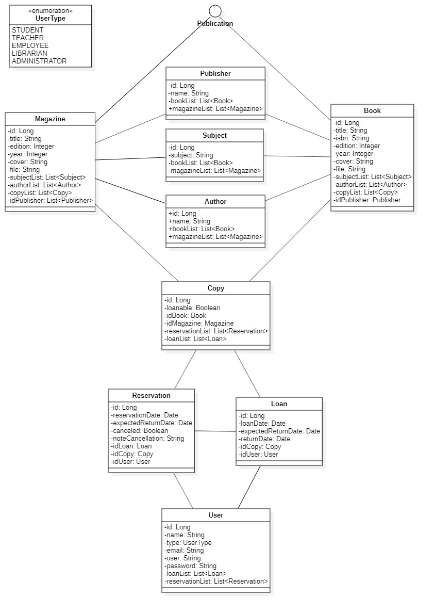

Diagrama de Classes (UML)
Diagramas de classes estão entre os tipos mais úteis de diagramas UML pois mapeiam de forma clara a estrutura de um determinado sistema ao modelar suas classes, seus atributos, operações e relações entre objetos.
Antes de iniciar o desenvolvimento da aplicação optamos por elaborar primeiramente o diagrama de classes, para facilitar o entendimento e desenvolvimento da aplicação por todos do grupo.
Nosso Diagrama de Classes:

Obs.: O diagrama foi elaborado com o programa StarUML e pode ser encontrado no diretório "/src/main/resources/documentation".